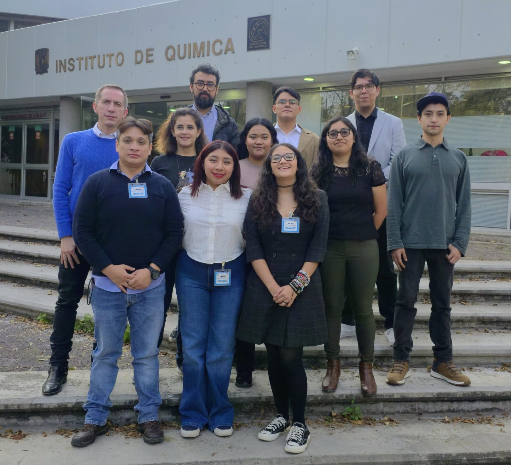
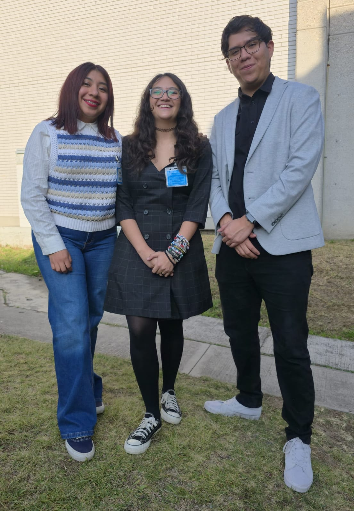

FZ-QSAR — Modelado predictivo de propiedades antibióticas
Resumen
La Inteligencia Artificial está transformando todas las áreas de la sociedad y, dentro de STEM, tiene numerosas aplicaciones para modelar interacciones no lineales muy complejas. En quimioinformática, la hipótesis de Relación Estructura-Actividad (SAR) establece que moléculas similares poseen propiedades similares, lo que permite crear modelos matemáticos que van de la estructura molecular a la actividad biológica.
Los modelos QSAR (Relación Cuantitativa Estructura-Actividad) permiten predecir propiedades de interés a partir de características moleculares. Al representar una molécula como un grafo, es posible usar operadores matemáticos para obtener propiedades estructurales intrínsecas, conocidas como descriptores moleculares. Mediante la Teoría de la Información, introducimos la Información Mutua para seleccionar los descriptores con mayor dependencia estadística respecto a la bioactividad. El resultado es FZ-QSAR, un modelo de red neuronal artificial para predecir la actividad antibiótica de compuestos nuevos que integra la representación topológica de las moléculas con la selección de descriptores basada en Información Mutua.
El modelo se aplicó al cribado de LANaPDB (Latin American Natural Products Database), con 13,578 compuestos naturales. Tras aplicar la regla de los cinco de Lipinski, el análisis de leverage y el criterio de distancia euclidiana mínima dentro del dominio de aplicabilidad, se identificaron cinco candidatos antibióticos muy prometedores.
Metodología y arquitectura
Datos y descriptores moleculares
Se compiló un conjunto curado de 71 compuestos con actividad antibiótica reportada experimentalmente. Para cada molécula se calcularon 1,218 descriptores moleculares (2D y 3D) con Mordred, una calculadora de descriptores de alto rendimiento. Estos descriptores codifican propiedades estructurales y fisicoquímicas diversas, como conteos de átomos, índices topológicos, propiedades electrostáticas y rasgos geométricos 3D.
Selección de variables con Información Mutua
La Información Mutua MI(X, Y) mide la dependencia estadística entre las variables X y Y,
sin importar la naturaleza de su relación (lineal o no lineal). En este trabajo, la Información Mutua permitió
identificar los descriptores moleculares X que aportan más información sobre la bioactividad antibiótica Y.
Aplicamos nuestra propia implementación del algoritmo mRMR (mínima Redundancia — Máxima Relevancia) para seleccionar un subconjunto óptimo y no redundante de descriptores. De los 1,218 descriptores iniciales se conservaron 99 con MI ≥ 0.4, y el procedimiento mRMR los redujo a 10 descriptores independientes, de los cuales 8 se seleccionaron para el modelo final:
piPC4 · GATS3i · SssNH · AXp-3dv · ATSC1s · n6HRing · GATS5p · SMR_VSA4
Arquitectura del modelo y optimización de hiperparámetros
El modelo predictivo se construyó con redes neuronales profundas en Keras 3. Los hiperparámetros se optimizaron mediante optimización bayesiana con Keras Tuner y validación cruzada K-Fold (K = 7) con particiones estratificadas, para asegurar una distribución representativa de la actividad en todas las particiones.
La arquitectura optimizada usó la siguiente configuración:
- Nodos en capa oculta: 385 (promedio entre particiones)
- Función de activación: LeakyReLU
- Tasa de dropout: 23%
- Regularización: L1 = 0.003 / L2 = 0.287
- Optimizador: Adam
- Función de pérdida: MAE (error absoluto medio)
Dominio de aplicabilidad y cribado virtual de LANaPDB
Para asegurar predicciones confiables se estableció un dominio de aplicabilidad riguroso. La base LANaPDB, con 13,578 productos naturales latinoamericanos, se filtró primero con la regla de los cinco de Lipinski, conservando 12,077 compuestos tipo fármaco. Después se usó un gráfico de Williams (residuales estandarizados vs. valores de leverage) para identificar los compuestos dentro del dominio estructural del modelo. Por último, se aplicó la distancia euclidiana mínima en el espacio químico para seleccionar los 5 candidatos más confiables dentro del dominio de aplicabilidad.
Compuestos prometedores identificados: LANaPDB3249, LANaPDB3812, LANaPDB3823, LANaPDB3881 y LANaPDB5144, con actividad antibiótica predicha en el rango de ≈ 5.0–5.4.
Logros clave
- Desarrollé FZ-QSAR, un marco QSAR robusto que combina la Información Mutua de la Teoría de la Información con redes neuronales profundas para predecir actividad antibiótica.
- Implementé un algoritmo mRMR (mínima Redundancia — Máxima Relevancia) propio para la selección de variables, reduciendo 1,218 descriptores de Mordred a un conjunto óptimo y no redundante de 8.
- Optimicé la red neuronal con Keras Tuner, optimización bayesiana y validación cruzada K-Fold (K = 7) estratificada, alcanzando un R² promedio de 0.81.
- Establecí un dominio de aplicabilidad riguroso con la regla de Lipinski, el gráfico de Williams (análisis de leverage) y la distancia euclidiana mínima para un cribado virtual confiable.
- Cribé la base LANaPDB (13,578 compuestos naturales) e identifiqué 5 candidatos antibióticos muy prometedores (LANaPDB3249, LANaPDB3812, LANaPDB3823, LANaPDB3881, LANaPDB5144) con actividad predicha ≈ 5.0–5.4.
- Obtuve métricas de generalización sólidas (Q²Ext, Q², GF y R² promedio), que indican alta capacidad predictiva con mínimo sobreajuste.
- Presenté los resultados en el simposio interno de investigación del Institute of Chemistry.
- Preparé un manuscrito con la metodología y los resultados, en etapa final de preparación para enviarse a arXiv.
Recursos
FZ-QSAR en GitHub
Repositorio con la implementación completa del pipeline FZ-QSAR: cálculo de descriptores con Mordred, selección de variables con mRMR y entrenamiento de la red neuronal en Keras con optimización bayesiana.
Ver repositorio →Preprint (arXiv)
Manuscrito completo con la metodología de FZ-QSAR, la selección de variables basada en Información Mutua, la arquitectura del modelo y los resultados del cribado virtual de LANaPDB; en etapa final de preparación.
Próximamente →Galería


